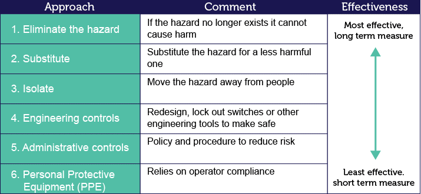
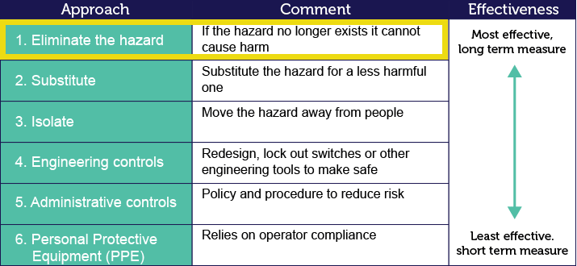
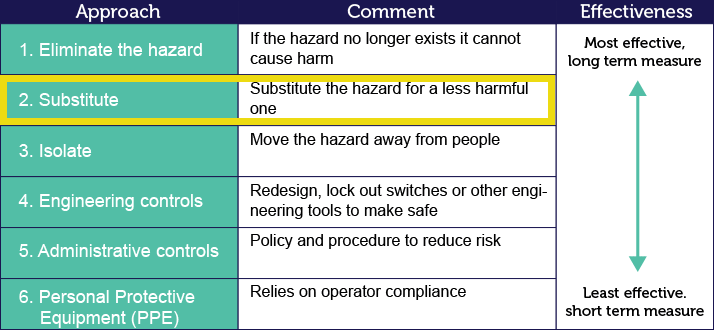
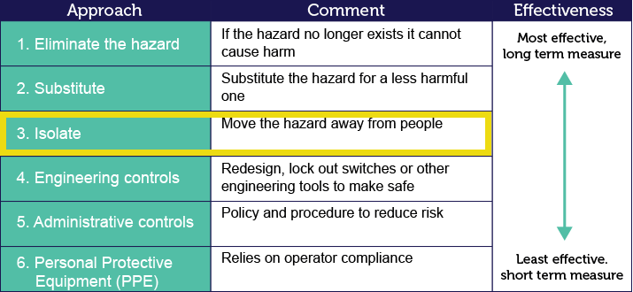

To select the best method of controlling a hazard, use the hierarchy of controls. This is a sequence of options that offer you a number of ways to approach the hazard control process.

1: Elimination
In order to use the chart for hazard control, you must start at control measure 1: Elimination. This involves eliminating the hazard at the source.

2: Substitution
If this is not possible or practical, you would then move down the list to control measure 2: Substitution. This involves substituting the process or product for one that does not produce hazards.

3: Isolate
If this is not possible or practical, move to control measure 3.
The process follows down the list in sequence until a suitable method of hazard control is achieved.

Complete elimination of the hazard is the safest and best method of control and is the preferred method in any case. Personal Protective Equipment (PPE) should only be a very short-term solution.